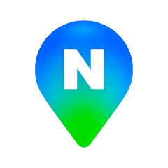

Plan · Explore · Worldwide
MAP GUIDE FOR KOREA
Which map app should you use in Korea?
Each map app has its own strengths.
Choose the best one for your trip in Korea.

Korea’s No.1 · Detailed · Accurate
Fast · Simple · Local Info
Google Maps, Naver Map and KakaoMap names and logos are trademarks of their respective owners. Korea Inside is not affiliated with or endorsed by Google, NAVER or Kakao.
Find your way
Navigate with confidence
Local information
Discover real local spots
Public transport
Get where you need to go
Better experience
Travel smarter in Korea
One destination, many ways to get there. Find the map that works best for you.
The Simple Setup
Google Maps
Use for saved places, reviews and sharing.
Naver Map
Main app for walking, subway, bus and local search.
KakaoMap
Keep as backup for alternate routes and bus details.
Quick Comparison
| Need | Google Maps | Naver Map | KakaoMap |
|---|---|---|---|
| Best use | Planning | Most travelers | Backup |
| Walking | Limited / improving | Recommended | Good backup |
| Subway / Bus | Limited / improving | Recommended | Strong backup |
| Restaurant reviews | Useful | Local details | Local backup |
| English usability | Familiar | Good | Limited / good |
| Backup value | Saved places | Main app | High |
Download Apps
Google Maps
Best for saved places and reviews.
Naver Map
Best for most navigation in Korea.
KakaoMap
Best as a local backup route app.
Install Before You Arrive
1Download
2Allow Location
3Save Hotel
4Test Route
5Start Navigation
Common Map Problems in Korea
English search fails
Solution: Copy the Korean name.
Wrong route?
Solution: Compare Naver Map and KakaoMap.
No live route?
Solution: Check mobile data or eSIM.
Subway exit confusion?
Solution: Check exit number before leaving.
Google route missing?
Solution: Use Naver Map for final navigation.
Why Google Maps Is Different
Google Maps works in Korea, but some navigation features can be limited because detailed Korean map data has historically been restricted from being exported to overseas servers for national security reasons. For accurate walking, subway, bus and driving routes inside Korea, Naver Map or KakaoMap is usually more reliable.
Before You Travel Checklist
Frequently Asked Questions
1. Which map app should I use in Korea?
Use Naver Map as your main app, keep Google Maps for planning and reviews, and install KakaoMap as a backup local map.
2. What is the best map app for first-time visitors to Korea?
Naver Map is the best first choice for most first-time visitors because it is strong for public transport, walking routes, local search and subway exits.
3. Should I install more than one map app?
Yes. Install Naver Map first, keep Google Maps for planning and reviews, and use KakaoMap as a backup.
4. Does Google Maps work in Korea?
Yes. Google Maps is useful for place search, saved places, reviews and sharing, but some navigation features may be limited or less reliable in Korea.
5. Why does Google Maps work differently in Korea?
Korea has had map data and security rules that affect how global map services operate. Google Maps functionality may improve, so check current functionality before relying on it.
6. Can I use Google Maps for walking navigation in Korea?
You can check it, but walking navigation has been limited or less reliable than local map apps. Use Naver Map or KakaoMap for the final walking route.
7. Can I use Google Maps for public transportation in Korea?
Google Maps may show some public transport information, but Naver Map and KakaoMap usually provide more complete local bus, subway and transfer details.
8. Can I use Google Maps for driving in Korea?
For driving, use Naver Map or KakaoMap unless you have verified that Google Maps driving navigation is fully available for your exact route at the time of travel.
9. Is Google Maps useful for restaurant reviews in Korea?
Yes. Google Maps is useful for international reviews and saved places. Cross-check restaurants in Naver Map for local listings, opening details and routes.
10. Should I delete Google Maps before traveling to Korea?
No. Keep Google Maps for planning, reviews, saved places and sharing. Use Naver Map or KakaoMap for final navigation.
11. Is Naver Map available in English?
Yes. Naver Map supports English maps and navigation, although small businesses, reviews or details may still appear in Korean.
12. Is Naver Map better than Google Maps in Korea?
For most navigation tasks in Korea, Naver Map is the better default. Google Maps remains useful for planning, reviews, saved places and sharing.
13. Does Naver Map show subway exits?
Yes. Subway exit information is one of the main reasons visitors should keep Naver Map installed.
14. Can I search in English on Naver Map?
Yes, especially for major places. If English search fails, copy the Korean name from a booking, website or Google result and paste it into Naver Map.
15. What should I do if Naver Map cannot find a place in English?
Copy the Korean name or Korean address from your booking, website, Instagram, Google result or hotel confirmation and search again.
16. Is KakaoMap available in English?
KakaoMap has English support, but English coverage may feel more limited than Naver Map for many travelers.
17. Should I use KakaoMap or Naver Map?
Start with Naver Map if you are a first-time visitor. Keep KakaoMap as a backup for local routes, bus details and alternate search results.
18. Is KakaoMap good for buses?
Yes. KakaoMap is a strong backup for local bus information, while Naver Map is still the easiest first choice for many visitors.
19. Does KakaoMap show walking routes?
Yes. KakaoMap supports walking routes and can be useful when you want to compare local route options.
20. Which app is best for walking navigation?
Use Naver Map first for walking navigation. KakaoMap is also useful as a backup local route app.
21. Which app is best for routes from Incheon Airport?
Use Naver Map for airport rail, bus, subway and walking routes from your arrival terminal.
22. Which app is best for subway routes?
Naver Map is the safest first choice for subway routes, transfers and station exits.
23. Which app is best for bus routes?
Naver Map is the best first choice for most visitors. KakaoMap is a strong backup for bus information.
24. Do map apps show when to get off the bus or subway?
Naver Map and KakaoMap can provide public transport route guidance and get-on or get-off details. Check the route before boarding.
Sources & Last Reviewed
Last reviewed: June 27, 2026. Google Maps, Naver Map and KakaoMap features can change. Check current app functionality before relying on any single app for navigation.
- Google Maps Help: Get directions and show routes
- Google Maps official website
- Google Maps on the App Store
- Google Maps on Google Play
- Naver Map on the App Store
- Naver Map on Google Play
- Naver Map traveler page
- KakaoMap official service page
- KakaoMap on the App Store
- KakaoMap on Google Play
- Visit Korea driving guide
- Visit Korea ride-hailing apps guide